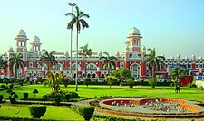
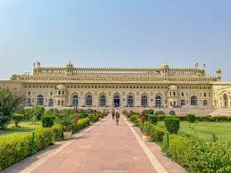

-
 Rumi Darwaza
Rumi Darwaza
-
.jpg) Bara Imambada
Bara Imambada
- Chota Imambada
-
 Janeshwar Mishra Park
Janeshwar Mishra Park
-
 Old Lucknow
Old Lucknow
-  Charbagh Lucknow
History of Lucknow
Lucknow, is the capital and the largest city of the Indian state of Uttar Pradesh and it is the administrative headquarters of the eponymous district and division. Having a population of 2.8 million as per 2011 census,it is the eleventh most populous city and the twelfth-most populous urban agglomeration of India. Lucknow has always been a multicultural city that flourished as a North Indian cultural and artistic hub, and the seat of power of Nawabs in the 18th and 19th centuries.[9] It continues to be an important centre of governance, administration, education, commerce, aerospace, finance, pharmaceuticals, information technology, design, culture, tourism, music, and poetry. Lucknow, along with Agra and Varanasi, is in the Uttar Pradesh Heritage Arc, a chain of survey triangulations created by the Government of Uttar Pradesh to boost tourism in the state.
“Lucknow history from 1856”
Lucknow lost its status as the capital of the Shī‘ī-ruled kingdom of Awadh with the
annexation of the province by the British East India Company in 1856. Citing poor
administration and mismanagement on the part of the final King of Awadh, Wājid ‘Alī Shāh
(1237-1304/1822-1887, r.1847-1856), the Company brought the province under direct rule,
relegating its former ruler to a capital-in-exile recreated in Murshidabad, Bengal. Following
British occupation, the city became a major centre of the Indian Uprising (1857-58), which
was locally focused upon a plot to instate Bīrjīs Qadr (1261-1311/1845-1893), the son of
Wājid ‘Alī Shāh, to the throne. The Uprising drew local strength from Awadh’s status as a
long-standing centre of recruitment for the East India Company’s Army, giving the province
a strong cadre of well-equipped military mutineers, and a powerful class of semi-independent
feudal landlords (ta‘luqdārs) with their own political interests and, sometimes, private
armies. Following the notorious siege of the British Resident’s compound, and after
vanquishing the rebel threat, the British demolished much of the city and brought it under
direct command.
The decades following the Rebellion are often seen as years of cultural decline. Colonial-era
Urdu essayists including ‘Abd-al Ḥalīm Sharār (1277-1345/ 1860-1926) penned nostalgic
reflections upon the city’s Nawābī-era glories, deemed to be the lauded ‘last phrase’ of an
‘Eastern civilization’. Other Muslim authors of the colonial period reflected upon the city’s
past with similar affection and, sometimes, satire. For instance, the novel Umrāo Jān Adā
(1905) by Mirzā Muḥammad Hādī Ruswā (1273-1350/ 1857-1931) recalled the courtesan
culture of Nawābi Faizabad and Lucknow; while the short story Shaṭranj ke khēlārī (“The
Chess Players”) (1924) by the Hindi novellist Mūnshī Prēmchand (1297-1355/ 1880-1936)
evoked and parodied the decadence and other-worldliness of the city’s courtly elites.
Nevertheless, Lucknow retained its status as one of British India’s most important Islamic
cultural centres. It remained famous long after 1856 for its Islamic educational institutions
and important ‘ulamā-families, and a vibrant Islamicate public sphere marked by major
public religious observances, publishing houses and influential public associations. It also
remained known for its lavish tehzīb: a much-celebrated, unique urban culture that combined
elements of the city’s Indo-Iranian and Islamic heritage, and other indigenous aspects drawn
from the Indian and Awadhi environment.
Linked to Muḥarram was the city’s tradition of marṣīyah: an elegiac poetic genre, usually in
Urdu, that lamented the martyrdom of Imām Ḥuṣayn ibn ‘Alī ibn Abī Ṭālib and his comrades
at the hands of the Umayyād Khalīfah, Yazīd ibn Mu‘āwiyah. Marṣīyah were often structured
in couplets or quatrain or sestain stanzas (known as musaddas), and sometimes extended to
long dirges designed for public narration. Major marṣīyah poets of the late-Nawābī era,
including Mīr Babar ‘Alī Anīs (1216/17-1291; 1802/3-1874) and Mirzā Salāmat Alī Dabīr
(1218-1292/ 1803-1875) continued their work after 1856, as did their respective disciples,
who maintained a renowned level of artistic rivalry. Public and private recitations of
marṣīyah remain commonplace seasonal events.
Drawing upon the city’s long past in both Sunnī and Shī‘ī learning, Islamic education and
scholarship remained powerful in Lucknow, with the city known for its excellence in both
rational and received Islamic sciences. It also remained home to a number of great scholarhouseholds, who have latterly been commemorated in biographies (tazkirahs). Chief among
these on the Sunnī side was the Farangī Maḥāll, a household of Sunnī scholars and Ṣūfīs best
known for developing the Dars-i-Niẓāmī curriculum, which they compiled in the eighteenth
century and taught thereafter. Their circle produced major luminaries like ‘Abd al-Ḥāyy
Lakhnawī (1264-1304/ 1848-1886), one of nineteenth-century India’s most influential
Islamic scholars: an expert on Ḥadīth and fiqh, he is especially known for his renewal of
ijtiḥād within the Ḥanafī tradition, and achieved huge reach through his authorship of fatāwā.
The Farangī Maḥāll family also produced major social and political leaders, including the
shaykh and community leader ‘Abd al-Bārī (1878-1926), who established a madrasah for the
family’s students and became a major community and political figurehead.
Lucknow has also been home for the Nadwa’t al-‘Ulamā movement. Originally founded in
adjacent Kanpur (Cawnpore) in 1893, Nadwa’t al-‘Ulamā was created as an association of
‘ulamā and other Islamic leaders, aiming to build common ground among different schools of
thought and compose a modernist agenda of Islamic learning. Receiving financial support
from the Muslim-ruled princely states of Hyderabad and Bhopal, Nadwa’t al-‘Ulamā was
subsequently recrafted into a religious school (madrasah), founded in Lucknow in
1323/1905. Under the guidance of its principal Shiblī Nu‘mānī (1273-1332/ 1857-1914), a
liberal Islamic scholar author from nearby Azamgarh, the school developed an
accommodative curriculum that combined traditional patterns of Ḥanafī learning along the
lines of the established Dars-i-Niẓāmī with modern disciplines. The school now has a student
body of approximately 6000, and a network of affiliated madrasahs across India.
The concurrent renewal of Sunnī and Shī‘ī religious movements in Lucknow, combined with
provocations around public rituals, has led to periodic outbursts of Shī‘ī-Sunnī violence in
various years, often occurring during Muḥarram processions and other mass religious events.
Both colonial administrations and post-independence governments have often responded with
curfews on such events to maintain public peace.
founder’s ‘urus (death anniversary).

The presence of a large community of Muslim landowners, officials and sharīf (‘noble’)
families ensured that Lucknowi Muslims played an enormous role in Muslim politics, even
nationally, before 1947. Muslims from Lucknow and Awadh were heavily represented in
socio-political movements such as the All India Muslim League, India’s most important
Muslim-led political party, after its foundation in 1325/1906. The alliance, which dominated
Indian Muslim politics until 1947, held several of its most important sessions in Lucknow,
and the city was the party’s de facto centre for approximately two decades after its creation.
Lucknow was also the key centre for pan-Islamic mobilisation in colonial India, and
ultimately, for the Khilāfat movement (1919-1924), a religio-political mobilization that
supported the Ottoman Sultan’s status as Khalīfah and opposed the European occupation of
the Ottoman Empire’s Arab provinces. The movement was partly led by ‘Abd al-Bārī of
Farangī Maḥāll, and was the site for many Khilāfat committees and rallies.
Despite the decline of Lucknow’s Islamicate culture, the city has remained a leading centre of
South Asian Islamic thought and learning, and its scholarly heritage have given rise to
important modern Islamic thinkers. Abū’ al-Ḥasan ‘Alī Ḥasani Nadwī (1332-1420/ 1914-
1999), a student and later the principal of Nadwa’t al-‘Ulamā from the 1960s, became one of
India’s most important scholars and Muslim community representative on social and political
issues. His many books covered numerous subjects including Islamic worship and education,
and Indian Muslim responses to religious decline, and life in a secular, pluralist nation.
Moreover, and separately from the city’s scholarly circles, Lucknow’s heritage of both
Islamic learning and social radicalism have established Lucknow as a space of reformist and
liberal Islamic mobilisation, including Muslim women’s movements. One of India’s earliest
Muslim women’s groups, the Bazm-i-Khawātīn, emerged in Lucknow in 1352-3/1934, as did
the All India Muslim Women’s Personal Board generations later in 1425/2005, which was
created to promote to promote women’s rights and demand the reform of Muslim personal
laws. Muslim women’s groups in the city have also established innovative religious practices
that are distinct to the city, including women’s public congregational prayers, and the
foundation of the ‘Anbar Masjid, a mosque for women.